수능(국어영역) (2014-04-10 기출문제)
1. 발화자들이 자신의 주장을 뒷받침하기 위해 내세운 근거로 적절하지 않은 것은?(1번 공통지문 문제)
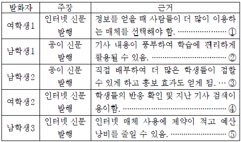
- ①편집확인.
- ②편집확인.
- ③편집확인.
- ④편집확인.
- ⑤편집확인.
(정답률: 알수없음)

2. 다음은 공감적 듣기에 대한 설명이다. [A]의 사례를 <보기>에서 찾았을 때, 가장 적절한 것은?
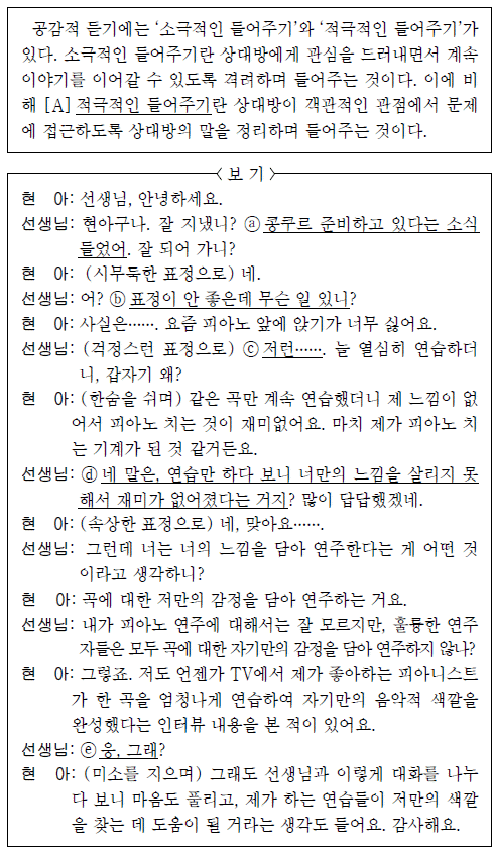
- ⓐ
- ⓑ
- ⓒ
- ⓓ
- ⓔ
(정답률: 알수없음)
3. 위 발표에 대한 학생들의 반응으로 적절하지 않은 것은?(4번 공통지문 문제)
- 발표자는 시청자가 메시지를 이끌어내는 주체라고 생각하고 있군.
- 발표자는 방송 제작자가 의미 없는 인코딩을 하지 않는다고 생각하고 있군.
- 발표자는 시청자가 방송 제작자의 인코딩 과정에 참여해야 한다고 생각하고 있군.
- 발표자는 디코딩을 통해 방송을 더 재미있게 시청할 수 있다고 생각하고 있군.
- 발표자는 방송 제작자의 인코딩을 보물찾기에서 보물을 숨기는 과정과 유사하다고 생각하고 있군.
(정답률: 알수없음)
4. 초고를 작성한 후 <보기>와 같은 자료를 추가로 수집하였다. <보기>를 활용하여 초고를 수정ㆍ보완하고자 할 때, 적절하지 않은 것은? [3점](6번 공통지문 문제)
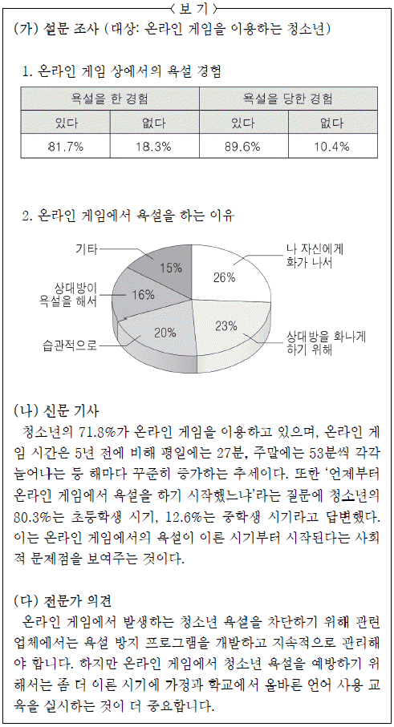
- (가)-1을 활용하여 둘째 단락에서 언급한, 온라인 게임을 이용하는 대부분의 청소년들이 욕설을 경험한다는 사실의 구체적 근거로 제시한다.
- (가)-2를 활용하여, 청소년들이 온라인 게임에서 욕설을 하는 이유 중 하나가 게임을 하면서 발생하는 분노일 수 있음을 셋째 단락에 추가한다.
- (나)를 활용하여 첫째 단락에서 언급한, 청소년들이 일상에서 온라인 게임을 하는 시간이 늘어났다는 내용의 구체적인 근거로 제시한다.
- (다)를 활용하여, 게임 제공 업체가 온라인 게임에 대한 청소년들의 장시간 접속을 방지하는 프로그램을 마련해야 함을 넷째 단락에 추가한다.
- (나)와 (다)를 활용하여, 각 가정에서도 올바른 언어 사용에 대한 조기 교육이 필요함을 넷째 단락에 추가한다.
(정답률: 알수없음)
5. 온라인 게임에서의 청소년 욕설 문제 해결을 위한 캠페인 문구를 <조건>에 맞게 작성한 것으로 가장 적절한 것은?(6번 공통지문 문제)
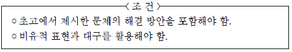
- 온라인 게임을 매연처럼 뒤덮은 욕설, 욕설 예방 교육에 참여하여 깨끗한 숨결을 불어 넣읍시다.
- 온라인 게임을 하지 않으면 청소년은 행복해집니다. 온라인 게임 시간을 줄여 웃음꽃을 크게 피웁시다.
- 상대를 향해 내던진 분노의 욕설, 자신을 향해 돌아온 격분의 화살. 온라인 게임에서 우리 스스로 욕설을 자제합시다.
- 상대에게 아픔을 주는 욕설, 상대에게 기쁨을 주는 바른 말. 올바른 언어를 사용할 수 있는 온라인 게임을 선택합시다.
- 나부터 실천하는 옳은 말 쓰기, 너까지 배려하는 바른 말 쓰기. 온라인 게임에서의 욕설 없애기 캠페인 활동에 모두 동참합시다.
(정답률: 알수없음)
6. ㉠ ~㉤을 고쳐 쓰기 위한 방안으로 적절하지 않은 것은?(9번 공통지문 문제)
- ㉠은 문장 성분 간 호응이 적절하지 않으므로 ‘마련된’으로 고쳐야겠어.
- ㉡은 문장 간의 연결 관계를 고려하여 ‘그러나’로 고쳐야겠어.
- ㉢은 글의 흐름과 어긋나는 문장이므로 삭제해야겠어.
- ㉣은 단어의 의미가 중복되었으므로 ‘함께’를 삭제해야겠어.
- ㉤은 문맥상 부적절한 단어이므로 ‘계발’로 고쳐야겠어.
(정답률: 알수없음)
7. 다음은 ‘축약’에 대한 문법 수업의 일부이다. (가) ~ (다)의 사례를 <보기>에서 골라 바르게 짝지은 것은? (순서대로 가, 나, 다)
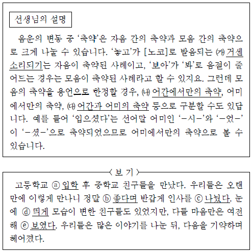
- ⓑ : ⓐ, ⓓ : ⓒ, ⓔ
- ⓒ : ⓐ, ⓑ : ⓓ, ⓔ
- ⓐ, ⓑ : ⓓ : ⓒ, ⓔ
- ⓐ, ⓑ : ⓒ, ⓔ : ⓓ
- ⓐ, ⓔ : ⓑ, ⓓ : ⓒ
(정답률: 알수없음)
8. 다음은 학교 홈페이지의 ‘질의-응답 게시판’의 일부이다. 이를 바탕으로 <보기>의 과제를 수행했을 때, 적절하지 않은 것은?
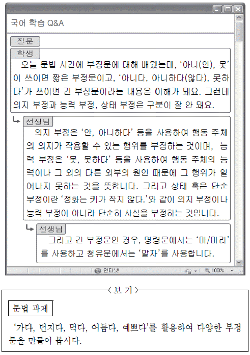
- ‘가다’를 사용하여 긴 부정문의 명령문을 만들면 ‘위험한 곳에는 가지 마라.’가 됩니다.
- ‘던지다’를 사용하여 능력 부정의 긴 부정문을 만들면 ‘민지는 공을 던지지 못했다.’가 됩니다.
- ‘먹다’를 사용하여 능력 부정의 짧은 부정문을 만들면 ‘나는 밥을 못 먹었다.’가 됩니다.
- ‘어둡다’를 사용하여 상태 부정의 긴 부정문을 만들면 ‘하늘이 어둡지 않다.’가 됩니다.
- ‘예쁘다’를 사용하여 의지 부정의 짧은 부정문을 만들면 ‘꽃이 안 예쁘다.’가 됩니다.
(정답률: 알수없음)
9. <보기>의 밑줄 친 내용을 설명하기 위해 활용할 수 있는 사례로 가장 적절한 것은?
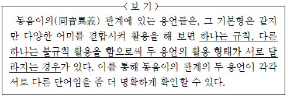
- 친구가 병이 낫다.
동생이 형보다 인물이 낫다. - 벽에 바른 벽지가 울다.
시합에 진 어린이가 울다. - 소나무가 마당 쪽으로 굽다.
어머니께서 빵을 굽다. - 친구에게 약속 시간을 이르다.
약속 장소에 이르다. - 장작이 벽난로에서 타다.
학교에 가려고 버스를 타다.
(정답률: 알수없음)
10. 다음은 사전의 일부이다. 이를 바탕으로 <보기>를 탐구한 내용으로 적절하지 않은 것은?
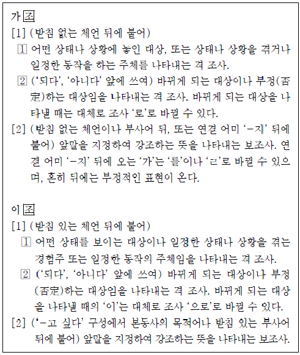
- ⓐ의 ‘가’와 ⓓ의 ‘이’는 ‘가[1]’과 ‘이[1]’을 통해 앞 체언의 받침 유무에 따라 선택된 격 조사임을 알 수 있군.
- ⓑ의 ‘가’는 조사 ‘로’로 바꾸어 쓸 수 있는 걸 보니, ‘가[1]’를 통해 ‘되다’ 앞에 쓰여 부정하는 대상임을 나타내는 격 조사임을 알 수 있군.
- ⓒ의 ‘가’는 ‘를’로 바꾸어 쓸 수 있는 걸 보니, ‘가[2]’를 통해 앞말을 지정하여 강조하는 뜻을 나타내는 보조사임을 알 수 있군.
- ⓓ의 ‘이’는 조사 ‘으로’로 바꾸어 쓸 수 있는 걸 보니, ‘이[1]
 ’를 통해 ‘되다’ 앞에 쓰여 바뀌게 되는 대상을 나타내는 격 조사임을 알 수 있군.
’를 통해 ‘되다’ 앞에 쓰여 바뀌게 되는 대상을 나타내는 격 조사임을 알 수 있군. - ⓔ의 ‘이’는 ‘이[2]’를 통해 앞말을 지정하여 강조하는 뜻을 나타내는 보조사임을 알 수 있군.
(정답률: 알수없음)
11. <보기>의 ㉠~ ㉤에 대한 설명으로 적절하지 않은 것은? [3점]
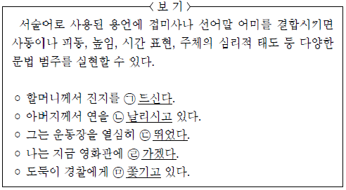
- ㉠의 ‘-시-’와 ㉡의 ‘-시-’는 각각의 행위 주체를 높이기 위해 사용된 선어말 어미이다.
- ㉠의 ‘-ㄴ-’과 ㉢의 ‘-었-’은 현재나 과거 등의 시제를 나타내기 위해 사용된 선어말 어미이다.
- ㉡의 ‘-리-’는 행위 주체인 ‘아버지’가 다른 대상으로 하여금 어떤 동작을 하게끔 만드는 것을 나타내기 위해 사용된 접미사이다.
- ㉣의 ‘-겠-’은 행위 주체인 ‘나’의 의지를 나타내기 위해 사용된 선어말 어미이다.
- ㉤의 ‘-기-’는 행위 주체인 ‘경찰’이 자신의 의지와 상관없이 다른 대상에 의해 동작을 당하는 것을 나타내기 위해 사용된 접미사이다.
(정답률: 알수없음)
12. 윗글을 바탕으로 <보기>의 자료를 해석했을 때, 적절하지 않은 것은? [3점](16번 공통지문 문제)
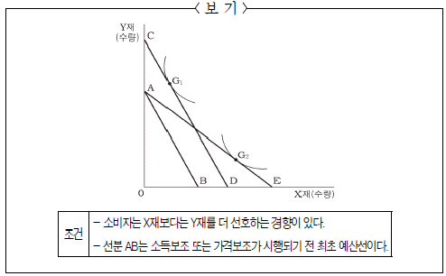
- 예산선이 AB에서 AE로 이동했다면, 소비자의 실질 소득은 늘어났다고 할 수 있겠군.
- 예산선이 AB에서 AE로 이동했다면, 소비자는 선호도와 상관없이 일시적으로 X재를 더 많이 구매할 수도 있겠군.
- 예산선이 AB에서 CD로 이동했다면，X재에 대한 Y재의 상대적 가격비율의 변화가 생겼겠군.
- 예산선이 AB에서 CD로 이동했다면, AE로 이동할 때보다 정부는 소비자의 소비 행동을 더 예측하기 어렵겠군.
- 예산선이 AB에서 CD로 이동했다면, AE로 이동할 때보다 소비자의 입장에서는 더 효율적이라고 생각할 수 있겠군.
(정답률: 알수없음)
13. 윗글을 읽은 학생이 <보기>의 신문 기사에 대해 보일 수 있는 반응으로 가장 적절한 것은?(16번 공통지문 문제)
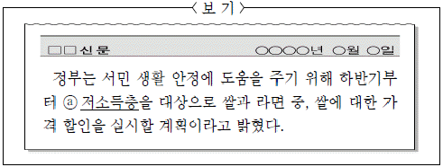
- 정책이 시행된다고 하더라도 ⓐ의 최적 선택지점은 변하지 않을 것이다.
- 정책이 시행된다면 ⓐ에게는 대체효과와 소득효과가 모두 발생할 것이다.
- 정책이 시행된다고 하더라도 쌀에 대한 ⓐ의 수요에는 변화가 없을 것이다.
- 정책이 시행된다면 ⓐ의 예산선에는 변함이 없지만 무차별 곡선은 변화할 것이다.
- 정책이 시행된다고 하더라도 ⓐ가 선택할 수 있는 상품 조합은 변하지 않을 것이다.
(정답률: 알수없음)
14. ㉠의 문맥적 의미와 가장 유사한 것은?(16번 공통지문 문제)
- 쌀이 떨어져 두 끼를 라면으로 때웠다.
- 감기가 떨어지지 않아 큰 고생을 하였다.
- 갈수록 성적이 떨어져서 대책을 세워야 한다.
- 해가 떨어지기 전에 이 일을 마치도록 하여라.
- 파란불 신호가 떨어지자 사람들이 건널목을 건넜다.
(정답률: 알수없음)
15. 윗글의 내용을 고려할 때, 문맥상 ㉠에 들어갈 내용으로 가장 적절한 것은?(20번 공통지문 문제)
- 강조를 통해 감상자의 고정관념을 과감하게 깨뜨릴 수 있어야 한다.
- 강조하려는 대상이 전체와의 관계에서 유기적 질서를 갖도록 해야 한다.
- 강조의 효과가 강한 것과 약한 것의 배치를 다양하게 시도해 봐야 한다.
- 강조를 통해 작가의 의도를 넘어서는 예술적 효과를 창출할 수 있어야 한다.
- 강조하려는 대상은 작품 속에서 다른 것과는 차별화된 형식을 가질 때 형성된다.
(정답률: 알수없음)
16. 공통지문의 네모친 “삼투조절”에 해당하는 사례를 <보기>에서 고른 것은?(22번 공통지문 문제)
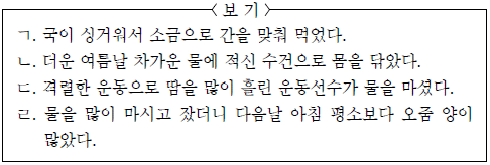
- ㄱ, ㄴ
- ㄱ, ㄷ
- ㄴ, ㄷ
- ㄴ, ㄹ
- ㄷ, ㄹ
(정답률: 알수없음)
17. 윗글을 바탕으로 <보기>의 ⓐ ~ⓔ에 대해 추론했을 때, 적절하지 않은 것은? [3점](22번 공통지문 문제)
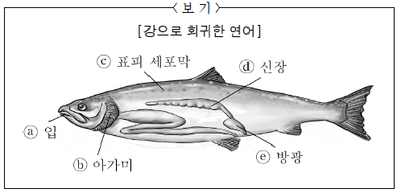
- ⓐ로 체액 농도를 유지하기 위해 물을 많이 들이마시려 하겠군.
- ⓑ에서는 염류 이동 통로가 닫히면서 흡수된 염류의 누출을 최소화 하겠군.
- ⓒ를 통해 외부의 수분이 체내로 유입되는 현상이 일어나겠군.
- ⓓ에서는 수분을 재흡수하는 작용이 바다에서보다 활발하지 않겠군.
- ⓔ에서 배출되는 오줌의 양은 바다에서보다 더 많겠군.
(정답률: 알수없음)
18. 윗글을 이해한 내용으로 적절하지 않은 것은?(25번 공통지문 문제)
- 고대 그리스인들은 대립자들의 조화에서 정의가 비롯된다고 생각했다.
- 아낙시만드로스는 우주의 질서가 무너진 것을 불의라고 규정했다.
- 아낙시만드로스는 원소들의 조화를 되찾게 하는 힘이 대립자들의 정의라고 규정했다.
- 히포크라테스는 질병을 치료하는 것보다는 그 예방을 중시했다.
- 히포크라테스는 몸 전체를 이루고 있는 부분들 사이의 조화를 건강이라고 보았다.
(정답률: 알수없음)
19. 윗글의 아리스토텔레스가 <보기>의 (A)에 대해 보일 수 있는 반응으로 가장 적절한 것은?(25번 공통지문 문제)
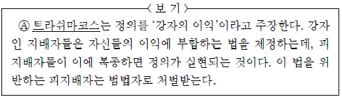
- (A)가 강조하는 법은 중용의 덕성을 보편화하고 있군.
- (A)는 계층 간의 평등 실현을 위해 법을 제정하고 있군.
- (A)는 지배자들의 합법적인 권리를 고려하지 못하고 있군.
- (A)가 규정한 정의 개념에는 피지배자들의 자발적 실천이 전제되어 있군.
- (A)는 개인의 정의로운 윤리를 바탕으로 법이 제정되어야 함을 간과하고 있군.
(정답률: 알수없음)
20. 윗글을 바탕으로 <보기>의 ㉠ ~ ㉢을 분석했을 때, 적절하지 않은 것은? [3점](28번 공통지문 문제)
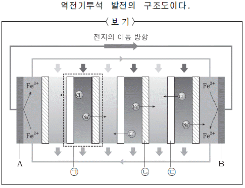
- ㉠의 개수가 많아질수록 전극 사이의 전위차는 커진다고 할 수 있겠군.
- ㉡의 기공에 양전하를 지닌 작용기를 설치한다면 막을 통과하는 이온의 종류도 달라지겠군.
- ㉡을 경계로 해수와 담수의 농도 차가 클수록 담수 쪽으로 이동하려는 이온의 양은 많아지겠군.
- ㉢의 기공에 작용기를 설치하지 않는다면 이온의 확산은 이루어지지 못하겠군.
- ㉡과 ㉢에 기공이 없다면 교환막을 사이에 두고 전기적 불균형은 발생하지 않겠군.
(정답률: 알수없음)
21. 윗글의 내용을 근거로 다음의 질문에 대해 대답했을 때, 가장 적절한 것은?(28번 공통지문 문제)
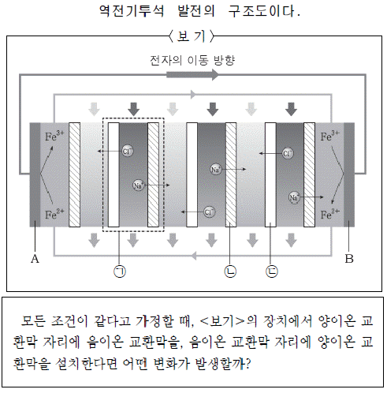
- A에서 환원 반응이 일어나게 될 것이다.
- A에서 철 2가 이온은 전자를 잃게 될 것이다.
- B에서 철 3가 이온은 전자를 잃게 될 것이다.
- A와 B 사이의 전압이 더욱 줄어들게 될 것이다.
- A와 B 사이의 전자 이동이 더욱 활발해질 것이다.
(정답률: 알수없음)
22. <보기>를 바탕으로 시적 화자와 대상과의 관계를 분석했을 때, 적절하지 않은 것은? [3점](31번 공통지문 문제)
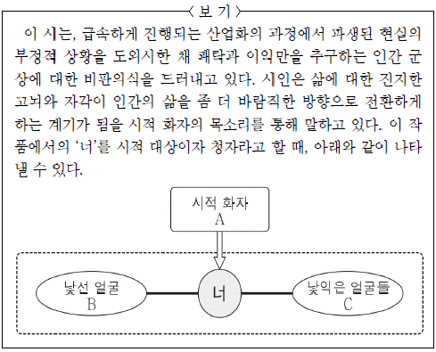
- A는 개인주의적 태도에 대한 자기 성찰의 필요성을 ‘너’에게 일깨워 주고 있다.
- B는 사회 이면에 존재하는 근본 문제에 대해 고민하는 인물의 모습을 형상화하고 있다.
- C는 사회 현실을 외면한 채 자신의 욕망에만 집착하는 현대인의 모습을 나타내고 있다.
- A는 B의 인식 변화를 통해 ‘너’가 직면하고 있는 현실이 개선될 것으로 기대하고 있다.
- A는 ‘너’가, C로 대표되는 삶의 유형으로부터 벗어나 냉철한 인식을 지니도록 요청하고 있다.
(정답률: 알수없음)
23. <보기>를 바탕으로 ㉠~㉤을 이해한 내용으로 적절하지 않은 것은?(31번 공통지문 문제)
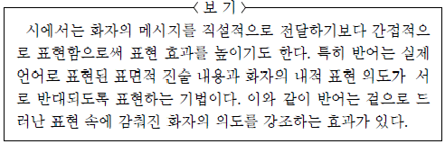
- ㉠은 주어진 현실을 맹목적으로 받아들이기보다는 문제의식을 가져야 한다는 점을 강조하여 표현한 것이군.
- ㉡은 사회의 침울한 분위기가 외형적 경제 발전에 의해 가려져 있다는 점을 강조하여 표현한 것이군.
- ㉢은 향락에 탐닉하여 이성적 판단이 마비된 삶이 결코 즐겁지만은 않다는 점을 강조하여 표현한 것이군.
- ㉣은 불합리한 현실 세계에 수동적으로 대응하기보다는 적극적인 자세를 지녀야 한다는 점을 강조하여 표현한 것이군.
- ㉤은 사소해 보이기는 하지만 평범한 일상에도 관심을 기울여야 한다는 점을 강조하여 표현한 것이군.
(정답률: 알수없음)
24. ㉠에 대한 설명으로 가장 적절한 것은?(34번 공통지문 문제)
- ‘그’가 긴장감을 느끼는 대상이다.
- ‘그’가 경이감을 느끼는 대상이다.
- ‘그’가 동질감을 느끼는 대상이다.
- ‘그’가 두려움을 느끼는 대상이다.
- ‘그’가 지겨움을 느끼는 대상이다.
(정답률: 알수없음)
25. <보기>를 바탕으로 윗글을 감상한 내용으로 적절하지 않은 것은? [3점](34번 공통지문 문제)
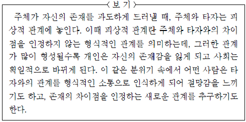
- “피곤기”는 ‘도회지’에서의 관계를 형식적인 소통으로 인식하게된 ‘그’의 절망감과 관련이 있겠군.
- “눈치놀음”은 형식적 관계를 배우고 가르치는 ‘도회지 사람들’의 모습에 대한 ‘그’의 부정적 태도와 관련이 있겠군.
- “유랑 습벽”은 자기 존재를 과도하게 드러내는 ‘도회지’에서 벗어나 새로운 관계를 추구하려는 ‘그’의 소망과 관련이 있군.
- “집터”에는 차이점을 인정하지 않는 ‘도회지 사람들’과의 관계로부터 벗어나고자 하는 ‘주인 사내’의 바람이 담겨 있군.
- “외톨박이”는 ‘도회지’에서의 피상적 관계와 상관없이 자기 존재감을 지키면서 살아가는 ‘주인 사내’의 삶을 의미한다고 할 수 있군.
(정답률: 알수없음)
26. ㉠∼㉤을 중심으로 시적 상황을 추리했을 때, 적절하지 않은 것은? [3점](37번 공통지문 문제)
- ㉠에서 화자가 친숙하게 대하는 소재인 ‘달’은 자연에 동화된 삶을 드러내는군.
- ㉡에서 화자의 흥을 돋우는 ‘낫대’는 자연에서 느끼는 충만감을 고조시키는군.
- ㉢에서 ‘그려낸’ 것으로 여기는 ‘연강첩장’은 자신을 둘러싼 자연에 대한 긍정적 인식을 나타내는군.
- ㉣에서 ‘부세’와 대응하는 ‘조선’은 세속적 삶에 대한 화자의 미련을 반영하는군.
- ㉤에서 화자가 기대하는 ‘내일’과 ‘모레’에는 현재의 삶이 지속되기를 바라는 심리가 내재되어 있군.
(정답률: 알수없음)
27. [A]와 <보기>를 비교하여 감상한 내용으로 가장 적절한 것은?(37번 공통지문 문제)
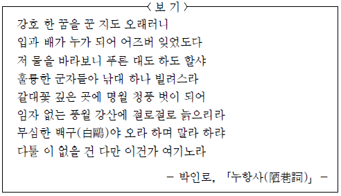
- <보기>는 [A]와 달리 현실 개혁에 대한 화자의 의지를 드러내고 있다.
- [A]는 <보기>와 달리 현재의 삶에 순응하려는 자세를 보이고 있다.
- [A]의 ‘구름’은 <보기>의 ‘명월’과 달리 부정적 현실을 차단하는 자연물로 기능하고 있다.
- [A]는 ‘물가’와 ‘세상’의 대비를 통해, <보기>는 ‘강호’와 ‘풍월 강산’의 대비를 통해 주제를 부각하고 있다.
- [A]와 <보기> 모두 화자 자신의 삶에 대해 반성하는 태도를 보이고 있다. [40 ~ 43] 다음 글을 읽고 물음에 답하시오.
(정답률: 알수없음)
28. <보기>를 바탕으로 윗글을 감상한 내용으로 적절하지 않은 것은? [3점](40번 공통지문 문제)
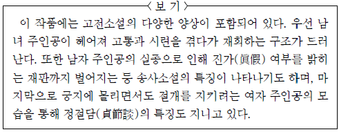
- ‘어사’가 ‘이씨로 수양딸을 정’하는 것에는, 여자 주인공의 지조와 절개가 영향을 끼쳤다고 할 수 있군.
- ‘앞니’의 ‘푸른 점’은, 여자 주인공이 남자 주인공의 진가 여부를 판단하는 중요한 근거라고 할 수 있군.
- ‘대인을 만나’게 된 사건은, 시련을 겪던 남녀 주인공이 재회하는 바탕이 되는군.
- ‘갓’을 ‘장난으로 내려 쓰’는 것은, 여자 주인공의 정절을 시험하는 행위이자 남녀 주인공이 분리되는 원인이 되는군.
- ‘축출하던 일’은, 남자 주인공의 실종 이후에 일어난 사건이자, 여자 주인공이 궁지에 몰렸던 상황과 관련되는군.
(정답률: 알수없음)
29. [A]와 [B]에 나타난 인물의 태도로 가장 적절한 것은?(40번 공통지문 문제)
- [A]에는 상대방을 걱정하는, [B]에는 상대방을 신뢰하는 태도가 드러난다.
- [A]에는 타인의 권위를 인정하는, [B]에는 타인을 원망하는 태도가 드러난다.
- [A]에는 자신의 진심을 숨기려는, [B]에는 자신의 처지를 호소하려는 태도가 드러난다.
- [A], [B] 모두 과거의 일을 후회하는 태도가 드러난다.
- [A], [B] 모두 자기 미래를 낙관적으로 전망하는 태도가 드러난다.
(정답률: 알수없음)
30. ＜보기>는 윗글을 읽은 학생의 반응이다. ( )에 들어갈 말로 가장 적절한 것은?(40번 공통지문 문제)
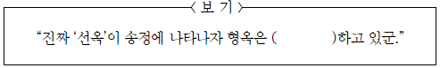
- 괄목상대(刮目相對)
- 목불식정(目不識丁)
- 방약무인(傍若無人)
- 수구초심(首丘初心)
- 좌불안석(坐不安席)
(정답률: 알수없음)
31. <보기>를 참고하여 윗글을 감상한 내용으로 적절하지 않은 것은?(44번 공통지문 문제)
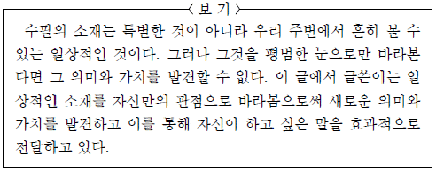
- 파초의 크기에 경탄하며 ‘지나는 사람’에게서 파초를 평범한 눈으로 바라보지 않으려는 태도를 엿볼 수 있군.
- 틈틈이 좋은 거름을 주는 등 파초를 기르는 경험이 제시된 것으로 보아, 파초는 ‘나’의 일상과 관련된 소재임을 알 수 있군.
- 파초 잎에 떨어지는 빗방울 소리를 듣고 마음에 비를 뿌린다고 표현한 것은, ‘나’가 파초를 자신만의 관점으로 보고 있음을 나타낸 것이군.
- 파초를 팔라는 ‘앞집 사람’의 제안을 수용하지 않은 것은 ‘나’가 파초를 의미 있고 가치 있는 것으로 보고 있기 때문이군.
- 자신의 눈이 뜨거워졌다는 말을 통해 ‘나’가 하고 싶은 말을 간접적으로 전달하는 것이겠군.
(정답률: 알수없음)